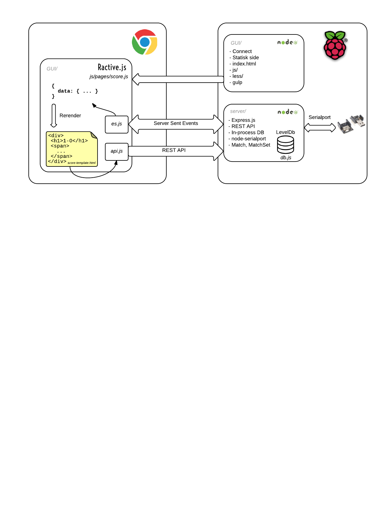

name: head class: center, middle, inverse --- template: head # Internet-enabled bordtennisbord ## Fagdag 6. nov - HANDS ON ### [github.com/bekk/bekkboard](https://github.com/bekk/bekkboard) --- template: head class: left # Agenda ## - Komponenter ## - Kode ## - Demo ## - Idemyldring ## - ..HANDS ON! --- template: head # Komponenter --- # Komponenter  ??? eirik foklarer - Hardware (hw) - server - GUI https://www.lucidchart.com/invitations/accept/a552ed26-cc39-46ae-a059-e95c9f01e212 --- template: head # Kode --- # RFduino (nesten Arduino med BLE)  ??? - programmerbart mikrokontrollerbrett - med samme interface som en arduino, med BLE og er bitteliten. - analoge GPIO-porter man kan lese og skrive til. - stackable - programmerer i et enkelt C-lignende språk. Fra samme software som arduino --- # RFduino ``` void setup() { Serial.begin(9600); } void loop() { Serial.println("Ping pong"); } ``` ??? - flasher kode på kortet. Setup kjører med en gang den får strøm. - setup. For initialisering av variabler, sette opp pins, sette opp biblioteker o.l. - loop. Loopes kontinuerlig etter at setup er ferdig. - vis arduino-koden til bordtennisbordet --- # Bluetooth Low Energy ## Kommunikasjon mellom RFduino <=> RFduino ### GaZeLL (GZZL) > Gazell , or GZLL, is a proprietary packet radio protocol released by Nordic Semiconductor. The protocol defines a star topology with one HOST and up to seven DEVICE's [GaZeLL Protocol Testing](http://thomasolson.com/PROJECTS/GZLL/) --- # Arkitektur  --- # Server ### - Javascript - Node.js ### - REST API ### - node-serialport ### - Express.js ### - Server sent events (SSE) ??? Har kjørt på iojs på pi'en - vil oppgradere til node 4.2.1! --- # Klient ### - Statisk side ### - Connect ### - Javascript - Ractive.js ### - Less ### - gulp ### - Ajax (cors) ### - SSE ??? torgeir forklarer - får all state, rendrer på nytt - Ractive? ikke React?! laget før react --- # Raspberry PI ## init.d services ### - bekkboard-api, eksponerer api på :3000 ### - bekkboard-gui, eksponerer gui på :9000 ## Logging ### - logging til /var/log/bekkboard-api.log ### - logging til /var/log/bekkboard-gui.log ## Setup ### - All setup i `pi-setup.sh` --- template: head # Demo --- # Oppgaveforslag - Logging og retry-logikk i `serial.js`. - Få alt til å kjøre på nyeste Node (4.2.2) - Smoothere deploy til raspberry pi (både gui og server). - QR-kode-registrering av spillere. - Lagring av resultater i en database - Exception-håndtering, logging og stabilitet - Rankingsystem (ELO-rating) - Statistikk og realtime grafer. - ++ -- ## Andre forslag? ??? # Idemyldring - QR-kode innlogging - Lagre bruker + qr-kode - Generere qr-kode som kan festes på adgangskort - Oppslag av spillere i adresselista til BEKK - Lagre scrores i database (igjen) - Exception håndtering - Logging - Stabilitet - Forbedre hw-kode mtp. strømforbruk - Vise gjenværende batterispenning? - Rankingsystem - Realtime grafer og statistikk - Turnering! --- template: head # Let's hack this table! ---